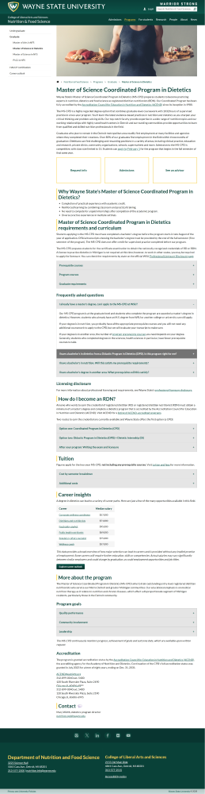
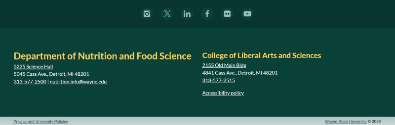
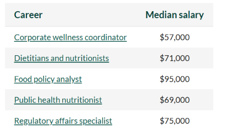
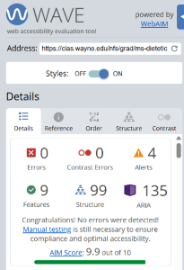
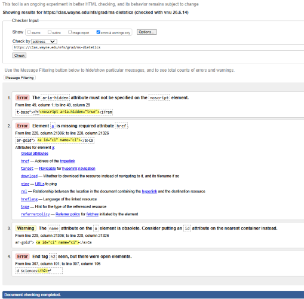

College of Liberal Arts and Sciences Nutrition and Food Science
Master of Science Coordinated Program in Dietetics
https://clas.wayne.edu/nfs/programs/grad
The webpage for Master of Science Coordinated Program in Dietetics offered a visual appealing look. Such as it was easy to navigate, it offered a lot of detail for about the program but in a sufficient way with drop down descriptive lists. Going through mutiple Wayne State webpages, this page met all the requirements for the assignment.
Major Sections
Site Header
The image above is the "header" for the webpage. This section would be considered the header because it has the name of the university and also the name of the college the program which both could be considered to be the title. Then, it has other meta data that a user might need. Lastly, there is style in the section to make it more appealing to the eye and to differientate between the header and the body.
Navigation
The image above is the "navigation" section of the webpage, it allows the user to see exactly where they are on the website. Also, shows the path of how the user land on the webpage in case they need to return to the orginial page.
Body

The large image above would be considered the "body" or the "main section" of the webpage. The body has its own header which would be "Master of Science Coordinated Program in Dietetics", the different sections and lastly the footer.
Site Footer

The last image is the "footer" it would be considered the footer it looks much like the header. It offers style, has meta data and the copyright symbol.
Headings
Heading One
- Master of Science Coordinated Program in Dietetics
Heading One was used for the title of the webpage.
Heading Two
- Why Wayne State's Master of Science Coordinated Program in Dietetics?
- Master of Science Coordinated Program in Dietetics requirements and curriculum
- How do I become an RDN?
- Tuition
- Career Insights
- More about the Program
- Contact
- Department of Nutrition and Food Science
These headings were all used to divide the webpage into subsections. So the user can understand the information following the header is based off the title of the section. For example "Tuition" heading provides context that the user will learn further about the cost of attendance.
Heading Three
- Nutrition and Food Science
- Frequently asked questions
- Licensing disclosure
- Program goals
- Accreditation
- College of Liberal Arts and Science
These headings would be considered heading 3 because they further divided the subsections with headings to describe detailed information on a specific topic.
Heading Four
- College of Liberal Arts and Sciences
- Request Info
- Admissions
- See an Advisor
The list of headings above are considered "Heading 4" they were used to emphasize helpful links on the webpage.
Lists
Unordered List

The list above is an example of an unordered list and is in plain text.
Description List
The list is an example of a descriptive list with a mixture of plain text and links. When the user clicks on the plus sign on the side, a drop down box opens with more information regarding the topic in the list.
Links
Internal Links
External Links
- Accreditation Council for Education in Nutrtition and Dietetics
- Corporate Wellness Coordinator
- Dietitians and Nutritionists
Most of the external links allow the user to go the site by opening another tab. There was one link in which that did not happen. The first external link on the page to send the user to Accreditation Council for Education in Nutrition and Dietetics website does not have (target=blank). Otherwise, external links could be differenitated by being underlined. For internal links there were icons or even styled differently give the title more emphasis.
Tables

The data table presented information about different career paths and their yearly pay. The different careers were also external links, so a user would be directed to a webpage with more information. The table did use (th) to label header columns; careers and median salary.A table helps organize the information in a way that is appealing and neat.
Accessibility

The webpage had zero errors and 4 alerts. The alerts were "redundant links" and "noscript element." The coding on Wave for the picture was listed as (styled:background image). Assure all the links are working properly and remove redundant hyperlinks to avoid confusion.
Validation

The validation results reported 3 errors and 1 warning. One error reported that element "a" is missing the "href" attribute, which is used for website links or internal links. To fix the error the creator needs add a hyperlink or a target.
Summary
Overall, the webpage for "Master of Science Coordinated Program in Dietetics" is well structured. Not hard to navigate as a user and organized. The drop down descripitive lists are a positive element or attribute of the page. Only if the user needs to read the information do they have to view. It helps shorten the page and keep it organized. The only suggestion is make sure the hyperlinks open a new tab when the user pushes the link. Also remove redundant links because it could confuse the user thinking it is new information.